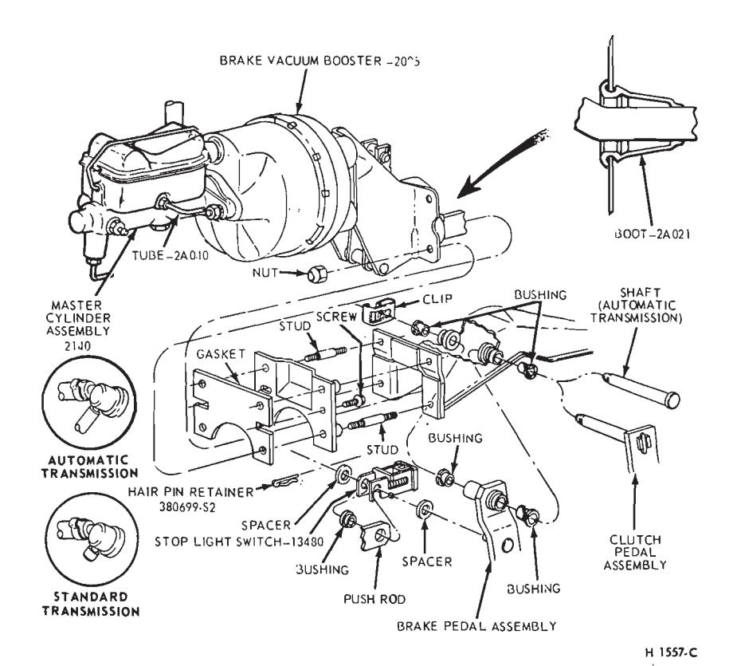
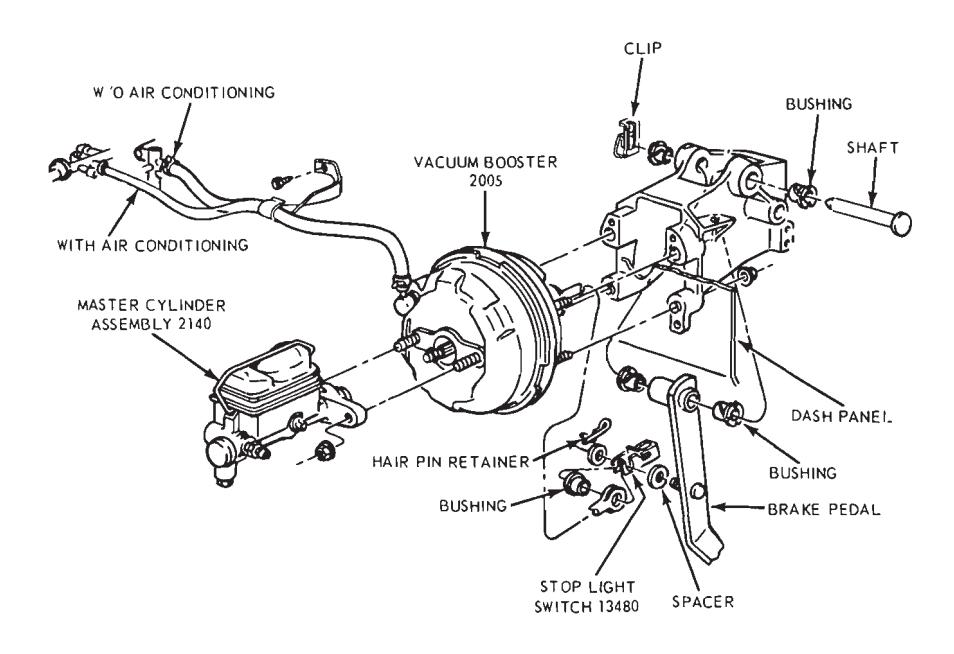
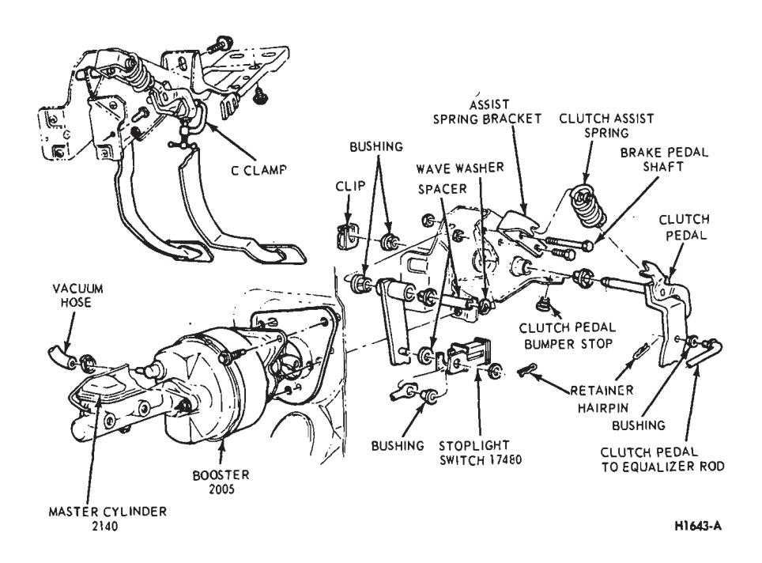
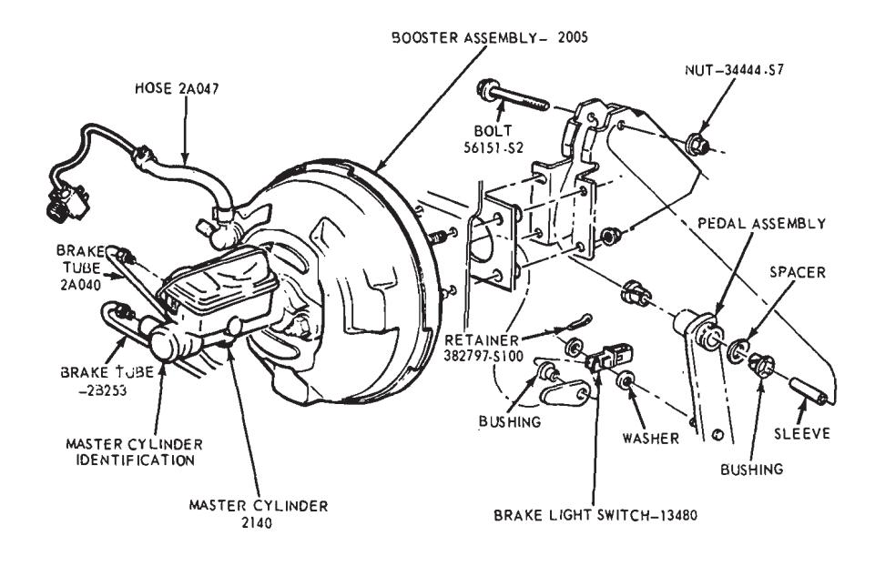
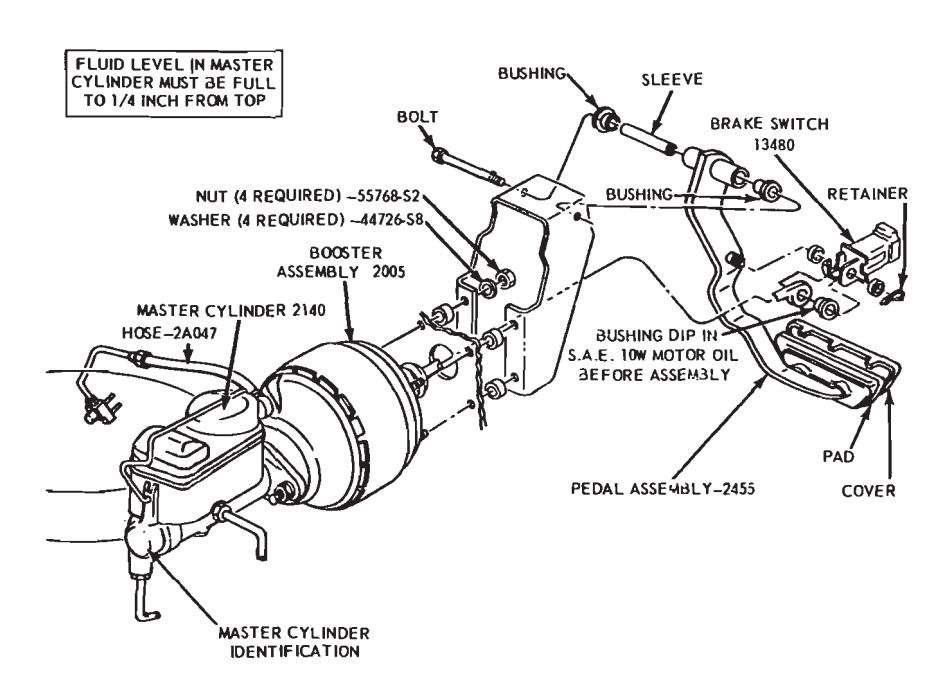

Disc Brake · 12-03-03a
Removal
-
Working from inside the vehicle below the instrument panel, disconnect the booster push rod from the brake pedal assembly. To do this, proceed as follows:
Disconnect the stop light switch wires at the connector. Remove the hairpin retainer. Slide the stop light switch off from the brake pedal pin just far enough for the switch outer hole to clear the pin, and then remove the switch from the pin and booster push rod. Be careful not to damage the switch during removal. Slide the booster push rod and the nylon washers and bushing off the brake pedal pin (Figs. 10 thru 14).
-
Open the hood and remove the master cylinder from the booster. Secure it to one side without disturbing the hydraulic lines. It is not necessary to disconnect the brake lines, but care should be taken that the brake lines are not deformed. Permanent deformation of brake lines can lead to tube failure.
-
Disconnect the manifold vacuum hose or hoses from the booster unit.
-
Remove the booster-to-dash panel attaching nuts or bolts (Figs. 10 thru 14). Remove the booster and bracket assembly from the dash panel, sliding the push rod link out from the engine side of the dash panel.
-
On Fairlane, Montego, and Falcon models, remove the push rod link boot from the dash panel.
Installation
- On Fairlane, Montego and Falcon models, install the push rod link boot in the hole in the dash panel as shown in Fig. 11. Install the four spacers on the mounting studs.
- Mount the booster and bracket assembly to the dash panel by inserting the push rod or push rod link in through the hole and boot in the dash panel. Install the bracket-to-dash panel attaching lock nuts or bolts (Figs. 10 thru 14).
- Connect the manifold vacuum hose or hoses to the booster.
- Before installing the master cylinder, check the distance from the outer end of the booster assembly push rod to master cylinder surface. Turn the screw in or out to obtain the specified length. Refer to Part 12-01, Section 2, Power Brake Master Cylinder Push Rod Adjustment. Install the master cylinder and torque the attaching nuts to specifications.
- Working from inside the vehicle below the instrument panel, connect the booster push rod link to the brake pedal assembly. To do this, proceed as follows:

Fig. 11 — Master Cylinder Installation — Power Brake — Fairlane, MontegoInstall the inner nylon washer, the booster push rod, and the bushing on the brake pedal pin. Position the switch so that it straddles the push rod with the switch slot on the pedal pin and the switch outer hole just clearing the pin. Slide the switch completely onto the pin, and install the nylon washer as shown in Figs. 10 thru 14. Be careful not to bend or deform the switch. Secure these parts to the pin with the hairpin retainer. Connect the stop light switch wires to the connector, and install the wires in the retaining clip.
Brake Pedal
Ford, Mercury and Meteor
Removal
- Disconnect the stop light switch wires at the connector.
- Remove the hairpin retainer. Slide the stop light switch off the brake pedal pin just far enough for the switch outer hole to clear the pin, and then lift the switch straight upward from the pin. Be careful not to damage the switch during removal. Slide the master cylinder or booster push rod and the nylon washers and bushing off the brake pedal pin (Fig. 10).
- Remove the hairpin-type retainer and washer from the brake pedal shaft, then remove the shaft, the brake pedal and the bushings from the pedal support bracket.

Fig. 10 — Master Cylinder Installation — Power Brake — Ford, Mercury and MeteorInstallation
- Apply a coating of SAE 10 Engine oil to the bushings and locate bushings in their proper places on the pedal assembly and pedal support bracket (Fig. 10).
- Position the brake pedal assembly to the support bracket, then install the pedal shaft through the support bracket and brake pedal assembly. Install the retainer.
- Install the inner nylon washer, the master cylinder or booster push rod, and the bushing on the brake pedal pin. Position the switch so that it straddles the push rod with the switch slot on the pedal pin and the switch outer hole just clearing the pin. Slide the switch completely onto the pin, and install the nylon washer as shown in Fig. 10. Be careful not to bend or deform the switch. Secure these parts to the pin with the hairpin retainer.
- Connect the stop light switch wires to the connector, and install the wires in the retaining clip.
- Check the Brake Pedal Free Height and Travel Measurements, Part 12-01, Section 1.
Fairlane, Montego — Manual-Shift Transmission
Removal
- Remove the clutch pedal assist spring.
- Disconnect the clutch pedalto-equalizer rod at the clutch pedal by removing the retainer and bushing.
- Disconnect the stop light switch wires at the connector.
- Remove the switch retainer, and slide the stop light switch off the brake pedal pin just far enough for the switch outer hole to clear the pin. Then lower the switch away from the pin.
- Slide the master cylinder or booster push rod and the nylon washers and bushing off from the brake pedal pin (Fig. 11).
- Remove the self-locking pin and washer from the clutch and brake pedal shaft, then remove the clutch pedal and shaft assembly, the brake pedal assembly, and the bushings from the pedal support bracket (Fig. 11).
Installation
- Apply a coating of SAE 10 engine oil to the bushings and locate all bushings in their proper places on the clutch and brake pedal assemblies.
- Position the brake pedal to the support bracket, then install the clutch pedal and shaft assembly through the support bracket and brake pedal assembly. Install the spring clip (Figs. 27 and 30).
- Install the clutch pedal assist spring.
- Connect the clutch pedalto-equalizer rod to the clutch pedal assembly with the bushing and the spring clip retainer. Apply SAE 10 engine oil to the bushing.
- Install the inner nylon washer, the master cylinder or booster push rod, and the bushing on the brake pedal pin. Position the switch so that it straddles the push rod with the switch slot on the pedal pin and the switch outer hole just clearing the pin. Slide the switch completely onto the pin, and install the outer nylon washer as shown in Fig. 11. Secure these parts to the pin with the self-locking pin.
- Connect the stop light switch wires to the connector, and install the wires to the retaining clip.
- Adjust the clutch pedal free play (Group 16-02) to specification, if required.
- Check the Brake Pedal Free Height and Travel Measurements (Part 12-01, Section 1).
Mustang and Cougar — Manual-Shift Transmission
Removal
- Disconnect the battery ground cable from the battery.
- Remove the steering column. Refer to Part 13-02 for procedure.
- Remove the two cap screws retaining the booster to the dash panel.
- Working inside the vehicle, secure the clutch pedal against the bumper stop with a small C-clamp as shown in Fig. 12.
- Disconnect the clutch pedalto-equalizer rod at the clutch pedal by removing the retainer and bushing.
- Disconnect the stop light switch wires at the connector.
- Remove the switch retainer and slide the stop light switch off the brake pedal pin just far enough for the switch outer hole to clear the pin. Then lower the switch away from the pin. Remove the master cylinder or booster push rod, bushing and nylon washer from the brake pedal pin.
- Remove the screw retaining the pedal support bracket to the top inner cowl bracket (Fig. 12).
- Remove the two sheet metal screws retaining the pedal support bracket to the dash panel. On power brakes remove the nuts from the brake booster studs.
- Remove the two screws retaining the pedal support bracket to the upper cowl brace and lower the pedal support bracket away from the steering column studs.
- Remove the pedal support bracket assembly from the vehicle.
- Position the pedal and support bracket assembly in a vise.
- Remove the C-clamp to release the clutch pedal from its bumper stop and pivot the pedal away from the bumper.
- Remove the clutch pedal assist spring.
- Remove the clutch pedal and shaft assembly, the brake pedal assembly, and the bushings from the pedal support bracket. Remove the retainer nut from the brake pedal shaft then remove the pedal shaft, the brake pedal assembly and the bushings from the pedal support bracket.

Fig. 12 — Master Cylinder Installation — Power Brake — Mustang and CougarInstallation
- Apply a coating of SAE 10 engine oil to the bushings and locate all bushings in their proper places on the clutch and brake pedal assemblies.
- Install the clutch pedal and shaft assembly through the support bracket and brake pedal assembly. On power brakes position the brake pedal to the pedal support bracket, then install the pedal shaft and nut.
- Install the clutch pedal assist spring and pivot the clutch pedal against its bumper stop. Secure the pedal to the stop with a small C-clamp as shown in Fig. 12.
- Position the pedal support bracket assembly to the dash panel, and to the steering column retainer studs.
- Align the pedal support bracket holes with the holes in the dash panel and install the two attaching sheet metal screws. Install the nuts on the brake booster studs.
- Install the two cap screws attaching the pedal support bracket to the upper cowl bracket.
- Install the cap screw attaching the pedal support bracket to the top inner cowl bracket (Fig. 12).
- Install the inner nylon washer, the master cylinder push rod, and the bushing on the brake pedal pin. Position the stop light switch so that it straddles the push rod with the switch slot on the pedal pin and the switch outer hole just clearing the pin. Slide the switch completely onto the pin, and install the outer nylon washer as shown in Fig. 12. Secure these parts to the pin with the self-locking retainer.
- Connect the stop light switch wires to the connector.
- Connect the clutch pedalto-equalizer rod to the clutch pedal assembly with the bushing and the spring clip retainer. Apply SAE 10 engine oil to the bushing. Remove the C-clamp from the clutch pedal.
- Working from the engine side of the dash panel. Install the cap screws retaining the brake booster to the dash panel.
- Install the steering column. Refer to Part 13-02 for procedure.
- Adjust the clutch pedal free play (Part 16-02) to specifications, if required.
- Check the Brake Pedal Free Height and Travel Measurements (Part 12-01, Section 1).
- Connect the ground cable to the battery.
Fairlane, Montego, Mustang and Cougar — Automatic Transmission
Removal
- Disconnect the stop light switch wires at the connector.
- Remove the self-locking pin and slide the stop light switch off the brake pedal pin just far enough for the switch outer hole to clear the pin. Then lower the switch away from the pin. Slide the master cylinder or booster push rod and the nylon washers and bushing off from the brake pedal pin (Fig. 12).
- On all vehicles except Mustang and Cougar, remove the self-locking pin and washer from the brake pedal shaft, then remove the shaft, the brake pedal assembly and the bushings from the pedal support bracket. On Mustang and Cougar vehicles, remove the locknut and bolt from the pedal. Remove the pedal assembly from the support bracket (Fig. 12).
Installation
-
Apply a coating of SAE 10 engine oil to the bushings and locate all the bushings in their proper places on the pedal assembly and pedal support bracket (Fig. 12).
-
Position the brake pedal assembly to the support bracket, then install the pedal shaft or bolt through the support bracket and brake pedal assembly. Install the retainer or lock-nut.
-
Install the inner nylon washer, the master cylinder or booster push rod, and the bushing on the brake pedal pin. Position the switch so that it straddles the push rod with the switch slot on the pedal pin, and the switch outer hole just clearing the pin. Slide the switch completely onto the pin, and install the outer nylon washer as shown in Fig. 12. Secure these parts to the pin with the self-locking pin.
-
Connect the stop light switch wires to the connector, and install the wires in the retaining clip.
Check the Brake Pedal Free Height and Travel Measurements, Part 12-01, Section 1.
Thunderbird and Continental Mark III
Removal
- Loosen the booster mounting nuts.
- Disconnect the stop light switch wires at the connector.
- Remove the hairpin retainer. Slide the stop light switch off from the brake pedal pin just far enough for the switch outer hole to clear the pin, and then lift the switch straight upward from the pin. Slide the master cylinder push rod and the nylon washers and bushing off from the brake pedal pin (Fig. 13).
- Remove the pivot bolt and nut that holds the pedal to the pedal support bracket. Remove the brake pedal assembly from the pedal support bracket, and remove the bushings.

Fig. 13 — Master Cylinder Installation — Thunderbird and Continental Mark IIIInstallation
- Apply a coating of SAE 10 engine oil to the bushings and locate all the bushings in their proper places on the pedal assembly (Fig. 13).
- Install the brake pedal assembly and bushings to the support bracket, and then install the pivot bolt through the support bracket and brake pedal assembly. Install the pivot bolt nut and torque to specifications.
- Install the inner nylon washer, the master cylinder push rod, and the bushing on the brake pedal pin. Position the switch so that it straddles the push rod with the switch slot on the pedal pin and the switch outer hole just clearing the pin. Slide the switch completely onto the pin, install the outer nylon washer as shown in Fig. 13. Secure these parts to the pin with the hairpin retainer.
- Connect the stop light switch wires to the connector, and install the wires in the retaining clip.
- Torque the booster mounting nuts to specifications.
Lincoln Continental
Removal
- Disconnect the battery ground cable from the battery.
- It is necessary to obtain clearance to remove vacuum hoses and the electrical connector to the temperature heat control box. Remove the two screws retaining the relay to the fender and push the relay aside. Disconnect the vacuum hoses and connector at the heat control box.
- Working under the instrument panel, disconnect the vacuum hoses, wires and retaining clip from the temperature heat control box. Remove the two screws securing the temperature control box to the dash panel.
- Remove the lower control housing retaining screws (6). Disconnect the wire harnesses at the lower control panel and place the panel aside. Remove the wire harness shield. Remove the wire harness clip. Position the wire harness aside. Remove the temperature control box and position it aside.
- Remove the hair-pin type retainer. Slide the stop light switch off the brake pedal pin just far enough for the switch outer hole to clear the pin. Lift the switch upward from the pin. Slide the master cylinder push rod, nylon washers and bushing off the brake pedal pin.
- Remove the pivot bolt and nut that holds the pedal to the pedal support bracket. Remove the brake pedal assembly from the support bracket and remove the bushings.
- If required, remove the brake pedal pad retaining nuts and remove the brake pedal pad.
Installation
- If the brake pedal pad was removed, position the pad on the pedal. Install the pad retaining nuts and torque them to specification.
- Apply SAE 10 engine oil to the bushings and locate all the bushings in their proper places on the pedal assembly.
- Install the brake pedal assembly and bushings to the support bracket, and then install the pivot bolt through the support bracket and pedal assembly. Install the pivot bolt nut and torque it to specification.
- Install the inner nylon washer, the master cylinder push rod link, and the bushing on the brake pedal pin. Position the switch so that it straddles the push rod link with the switch slot on the pedal and the switch outer hole just clearing the pin. Install the outer nylon washer as shown in Fig. 14. Install the hair-pin type retainer on the brake pedal pin.
- Connect the stop light switch wires to the connector, and install the wires in the retaining clip.
- Position the wire harness and clip on the temperature control box and install the retaining screw. Position the temperature control box to the dash panel and install the two retaining bolts.
- Connect the vacuum lines and the electrical connector to the control box. Position the wire harness to the control box and install the retaining clip.
- Position the wire harness shield and install two retaining bolts.
- Connect the wire harnesses to the lower control panel and install the retaining screws.
- Working within the engine compartment, connect the wire connector to the temperature heat control box.
- Position the relay to the fender apron and install the retaining bolts.
- Connect the ground cable to the battery.
- Check the brakes and light switch for proper operation. Close the hood.

Fig. 14 — Master Cylinder Installation — Lincoln Continental